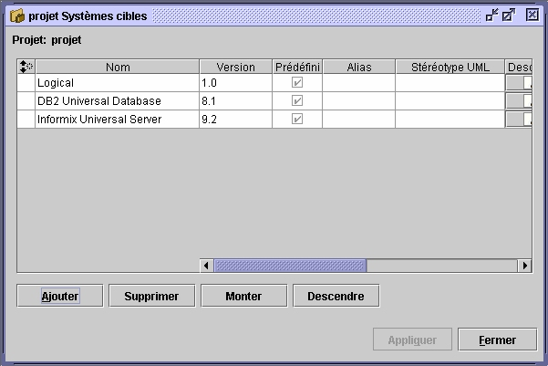
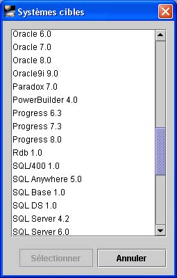

Le
système cible
Le système cible vient avec des types de données. On
choisit le système cible en fonction du SGBD (Système de
Gestion de Base de Données) dans lequel on entrevoit
développer ses modèles de base de données. Cette
opération définit les types de données, qui
s'inscriront sous le noeud Types prédéfinis du projet.
Prenez note qu’il ne peut y avoir qu’un seul noeud d'utilisateur par
projet, par
contre, il peut y avoir plusieurs systèmes cibles.
Le système cible par défaut est le système Logique
(Logical 1.0).
Configuration
du système cible
Pour créer le modèle de données, l'application
nécessite un système cible. Si le concepteur
est contraint par un système cible particulier, il peut
configurer cette information, autrement il peut utiliser le
système cible attribué par défaut, le
système Logique.
Open ModelSphere offre un grand choix de systèmes
cible. Pour choisir vos
systèmes cible, choisissez Outils > Assigner un
système cible.


NB : Un système cible ne peut
pas être supprimé s'il est
utilisé par un objet.